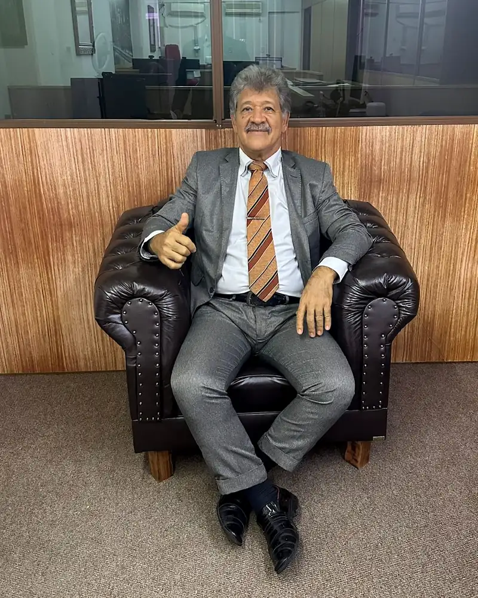

Dr. Lopes é advogado criminalista inscrito na OAB/RJ sob o nº 137.849, pós-graduado em Direito Penal e Processo Penal desde 2007 pela Escola Superior de Advocacia (ESA OAB-RJ), membro da Associação Brasileira de Advogados Criminalistas (ABRACRIM), com vasta experiência nas áreas de Direito e Processo Criminal, é especialista na defesa de crimes contra a vida julgados pelo Tribunal do Júri e outros delitos inerentes à área criminal, oferecendo uma atuação técnica, estratégica e de excelência na defesa dos direitos de seus clientes em delegacias, fóruns e tribunais de todo o Estado do Rio de Janeiro, com atendimento 24 horas.

Um familiar foi preso e você não sabe o que fazer. As primeiras horas são decisivas para evitar a conversão em prisão preventiva.
Base legal: CF, art. 5º, LXIII; CF, art. 5º, LXII; CPP, art. 306; CPP, art. 310.
Recebeu uma intimação e não sabe como agir? Antes de comparecer, entenda se você foi chamado como testemunha ou como investigado: quem é investigado tem direito ao silêncio, e o silêncio não pode ser usado contra a defesa.
Base legal: Lei 8.906/1994, art. 7º, XXI; CPP, art. 218; CF, art. 5º, LXIII.
Base legal: CPP, art. 367.
Foi decretada sua prisão preventiva ou existe um mandado em aberto? A ação imediata pode reverter essa decisão.
Operação policial no seu imóvel ou empresa? É fundamental ter um advogado criminalista presente para garantir seus direitos.
Marcada para as próximas horas. Sem advogado especialista, o risco de prisão preventiva aumenta drasticamente.
Soube que está sendo investigado? A fase de inquérito define os rumos de todo o processo. Agir cedo é proteger-se.
Acusado de crime doloso contra a vida? O processo tem fases próprias, do inquérito ao plenário do júri, e a defesa precisa começar cedo.
Condenado em decisão definitiva? A revisão criminal reanalisa a condenação quando há erro judiciário, prova falsa ou prova nova.
Base legal: CPP, art. 593; CPP, art. 621.
Homicídio, tentativa, lesão corporal grave. Atuação em todas as fases, incluindo Tribunal do Júri no Rio de Janeiro.
Impetração urgente para combater prisões ilegais, excesso de prazo e coações indevidas à liberdade de locomoção.
Atuação imediata para avaliar a legalidade da prisão em flagrante e buscar a liberdade provisória em até 24 horas.
Defesa em crimes patrimoniais, com foco em desclassificação, excludentes de ilicitude e circunstâncias atenuantes.
Progressão de regime, livramento condicional, saída temporária e acompanhamento processual junto à Vara de Execuções Penais (VEP).
Defesa em processos de violência doméstica, revisão de medidas protetivas de urgência e atuação em audiências criminais.
Base legal: Lei 11.340/2006, art. 24-A.
Estelionato, fraude, apropriação indébita, crimes contra a ordem tributária, crimes falimentares e contra o sistema financeiro.
No Direito Penal, a diferença entre a liberdade e a prisão pode estar na velocidade e na qualidade da defesa nas primeiras horas. O Dr. Lopes atua exclusivamente na advocacia criminal, com conhecimento profundo da rotina dos tribunais, delegacias e fóruns do Rio de Janeiro.
Cada caso é tratado com total discrição e confidencialidade, protegendo a imagem e a privacidade do cliente e de sua família.
Plantão criminal para flagrantes e audiências de custódia, com resposta imediata via WhatsApp e ligação.
Cada defesa é artesanal. Sem modelos genéricos: a tese é construída com base nos fatos, provas e jurisprudência específica do caso.
A maioria das pessoas acredita que o advogado só é necessário quando o processo já está em andamento. Esse é um erro que custa caro. A fase de inquérito policial e a lavratura do flagrante são momentos em que direitos fundamentais são frequentemente violados: depoimentos tomados sem orientação, provas produzidas de forma ilícita, prazos descumpridos.
A presença de um advogado criminalista desde a delegacia garante que o auto de prisão em flagrante seja lavrado corretamente, que o cliente seja orientado sobre o direito ao silêncio e que abusos sejam documentados para uso posterior na defesa.
No Direito Criminal, as primeiras 24 horas definem o destino de um processo inteiro. Agir depois pode significar corrigir danos que poderiam ter sido evitados.
Acompanhamento do depoimento, orientação sobre o silêncio e fiscalização do procedimento policial.
Verificação de legalidade, identificação de nulidades e preparação para a audiência de custódia.
Construção da tese defensiva com base nos fatos ainda frescos, preservando provas favoráveis.
Fale pelo WhatsApp ou ligue. Em casos de urgência, a resposta é imediata, mesmo fora do horário comercial.
O Dr. Lopes avalia os fatos, documentos e o cenário jurídico para definir a melhor estratégia de defesa.
Atuação técnica em delegacias, audiências, tribunais e junto ao Ministério Público, com acompanhamento transparente.
Meu irmão foi preso numa sexta à noite e eu não sabia o que fazer. Liguei para o Dr. Lopes e em menos de uma hora ele já estava na delegacia. Na segunda, meu irmão saiu na audiência de custódia. Profissional sério e humano.
Fui acusado injustamente e estava desesperado. O Dr. Lopes analisou tudo com calma, montou uma defesa impecável e conseguiu minha absolvição. Transparente do começo ao fim, sempre me explicando cada passo.
Contratei o Dr. Lopes para acompanhar um caso na VEP e ele conseguiu a progressão de regime do meu marido antes do prazo que outros advogados tinham dado. Atencioso, rápido e muito competente.

Inscrito na OAB/RJ sob o nº 137.849, o Dr. Lopes é advogado penalista com atuação exclusiva em Direito Penal e Processual Penal, com experiência consolidada em delegacias, fóruns e tribunais de todo o estado do Rio de Janeiro. À frente de um escritório de advocacia criminal no RJ, sua trajetória é marcada pela defesa criminal individualizada, pela presença constante ao lado do cliente e pela busca incansável pelo melhor resultado em cada caso.
Com formação sólida e atualização permanente, atua em todas as fases do processo criminal: desde o acompanhamento de inquéritos policiais no Rio de Janeiro e flagrantes até a sustentação oral em tribunais e a impetração de habeas corpus. Sua prática abrange pedidos de liberdade provisória, relaxamento de prisão, audiências de custódia, defesas em Tribunal do Júri, recursos junto ao TJ-RJ, STJ e STF, e acompanhamento de execução penal na VEP. Cada defesa é tratada como única, com a análise minuciosa dos fatos e a construção de teses sob medida.
Mais do que um advogado criminal, o Dr. Lopes é um parceiro de confiança nos momentos mais difíceis. A comunicação transparente, o atendimento humanizado e o compromisso ético são os pilares que norteiam sua advocacia criminal no Rio de Janeiro.
Tribunal de Justiça do Estado do Rio de Janeiro (TJRJ), Fórum Central — Varas Criminais, Central de Audiências de Custódia de Benfica, Cidade da Polícia (Jacarezinho), 1ª a 5ª Delegacias Policiais, Defensoria Pública do Estado.
Fórum Regional de Jacarepaguá, Presídio José Frederico Marques (Benfica), Complexo Penitenciário de Gericinó (Bangu), Delegacias do Méier, Tijuca, Madureira, Penha. Vara de Execuções Penais (VEP).
Fórum Regional da Barra da Tijuca, Delegacias de Copacabana (12ª DP), Botafogo, Leblon, Recreio dos Bandeirantes. Juizados Especiais Criminais (JECrim) e Varas Criminais regionais.
O Dr. Lopes e equipe atuam na área criminal de Nova Iguaçu, Duque de Caxias, São João de Meriti e de todos os municípios da Baixada Fluminense.
O Dr. Lopes e equipe atuam em todas as delegacias e em todas as varas criminais de Niterói, São Gonçalo e Região dos Lagos. Atendimento presencial e acompanhamento remoto via WhatsApp.
Atuação perante o Tribunal de Justiça do Estado do Rio de Janeiro (TJ-RJ), Tribunal Regional Federal da 2ª Região (TRF-2), Superior Tribunal de Justiça (STJ) e Supremo Tribunal Federal (STF) em habeas corpus, recursos especiais e extraordinários.
Cada minuto sem um advogado criminalista pode comprometer sua defesa. Fale agora com o Dr. Lopes e proteja sua liberdade.
Fale com o Criminalista agora